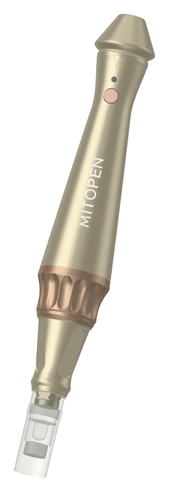
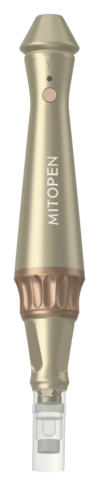
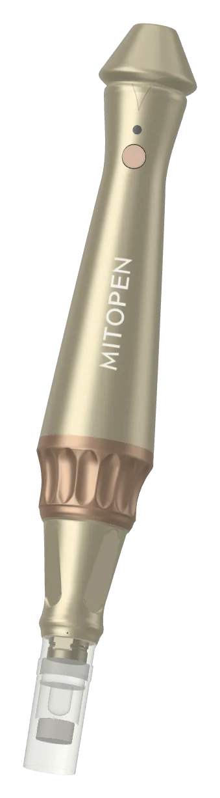
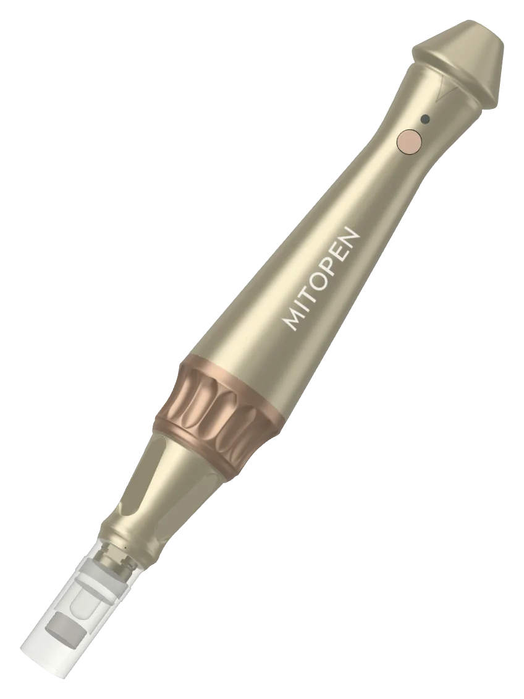

מכשורמקצועי
מכשור מקצועי לקליניקה
MITOPEN
מסלול החדירה לרכיבים הפעילים.

עט מיקרונידלינג מקצועי ואלחוטי, היוצר מיקרו־תעלות זמניות – מסלול החדירה לרכיבים הפעילים של מיטודרם.
- מקצועי
- 0.25–2.5 מ״מ
- עד 5 מהירויות
- אלחוטי
למה?
דיוק שאפשר לשחזר.

האזור, עובי העור והאינדיקציה – כל אחד מהם דורש עומק וצפיפות משלו. פרוטוקול מדויק ואחיד מתחיל בכלי העבודה.
אינדיקציות
- פנים
- צוואר ודקולטה
- קרקפת
- עומק לפי אינדיקציה
מה בפנים
מ-0.25 עד 2.5 מ״מ. חמש מהירויות.

עומק מתכוונן 0.25–2.5 מ״מ בהתאם לאזור ולאינדיקציה; עד חמש מהירויות לשליטה בצפיפות המיקרו־תעלות ובעוצמת הגירוי.
מפרט טכני
- עומק 0.25–2.5 מ״מ
- עד 5 מהירויות
- צפיפות המיקרו־תעלות
- אלחוטי · שקט
הרגישו
שקט. אלחוטי. בשליטה.

ארגונומי, אלחוטי ושקט – נוח לקוסמטיקאית, מדויק עבור המטופלת, ותוכנן לתמוך בהחדרת החומרים הפעילים.
- ארגונומי
- שקט
- אלחוטי
- תומך בהחדרת חומרים
פרוטוקול
הגדרה. מיקרונידלינג. החדרה.
בחרו עומק ומהירות בהתאם לאזור, צרו מיקרו־תעלות אחידות ולאחר מכן יישמו את V-TECH SYSTEM בפנים או את EXOSIGNAL HAIR בקרקפת.
משתלב עם V-TECH · EXOSIGNAL HAIR · MICRO BOOST 10%
- 01
הגדרת עומק ומהירות
- 02
מיקרונידלינג אחיד
- 03
החדרת הפורמולה
הצעה
הכניסו את MITOPEN לקליניקה שלכם
לשימוש מקצועי בלבד. המומחה שלנו ייעץ לכם בנושאי הדרכה, פרוטוקולים ותמחור.
מצאו מומחה
מומחי MITODERM מוסמכים
פרוטוקול V-TECH, פילינג EXO-NAD ומסכת EXOCELL מבוצעים על ידי איש מקצוע.
מקצוע
עדיין אין מומחים מוסמכים בקטגוריה זו – ראו את הרשימה המלאה.
רשימת קוסמטיקאיות וקליניקות מוסמכות
אתם קוסמטיקאים?הגשת בקשה